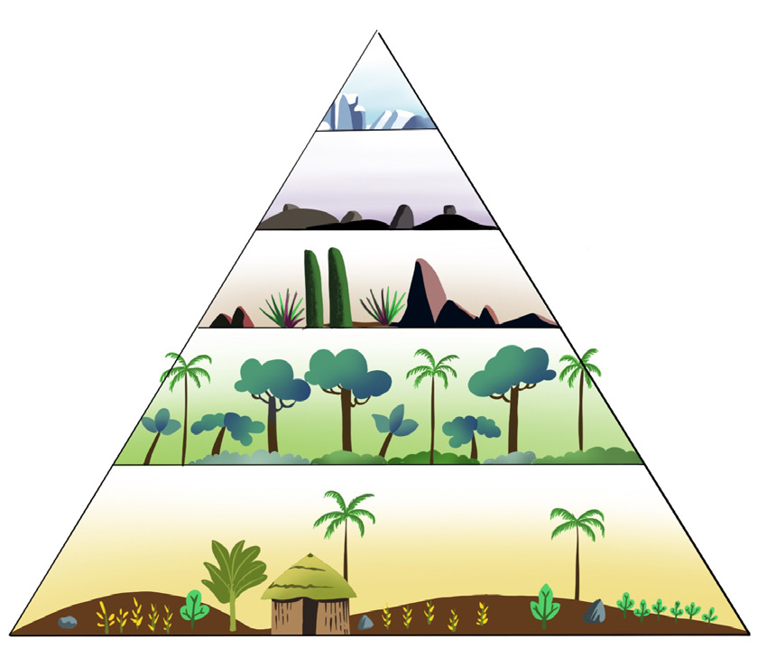

This results in poor plant growth. Gentle slopes have deep and well drained soils, resulting in the growth of vegetation.
(c) Aspect: Aspect is the orientation or direction of the slope toward sunshine and rainfall. Normally, the side of a slope exposed to the sun is warm; hence, it supports plant growth. Less vegetation grows on the slopes which are not exposed to sunshine. For example, in the northern hemisphere, north-facing slopes may receive less sunlight and have different plant communities than south-facing slopes and vice versa in the southern hemisphere.

Figure 4.17: An example of vegetation zones on Mount Kilimanjaro3. Edaphic factor
Soil is one of the most important ecological factors called edaphic factor. The type and quality of soil in an area determines the type of vegetation found in that area. Some plants are adapted to specific soil types, while others can tolerate a broader range of soil conditions.
The soils, that are deep and well drained support growth of vegetation. Such soils favour growth of large trees and thick forests. Areas with shallow soils hardly support the growth of large and long rooted trees but can support shrubs and grasses. Soils with a lot of nutrients and humus support growth of vegetation than soils without or with low nutrients or humus.
4. Biotic factor
Human activities can develop or destroy vegetation of an area. Human practices such as agroforestry, reforestation, afforestation, and creation of forest reserves result in the development of vegetation. However, human activities such as urbanisation, agriculture, and the introduction of invasive species alter vegetation types. Also, deforestation, mining, and overgrazing destroy vegetation. Moreover, some animals, birds, and insects aid in pollination and seed dispersion, leading to the growth and distribution of vegetation on the earth’s surface. For instance, burrowing animals and earthworms create suitable conditions for plant growth, by aerating and fertilizing the soil.
Activity 4.8
 Activity 4.8
Activity 4.8(a) Study the vegetation zones found in Tanzania by consulting the library and internet sources.
(b) Observe the vegetation found in the school and the nearby surrounding area.
(c) Draw the map of Tanzania and show the main vegetation zones found.